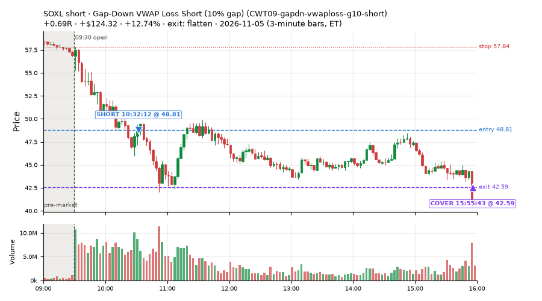
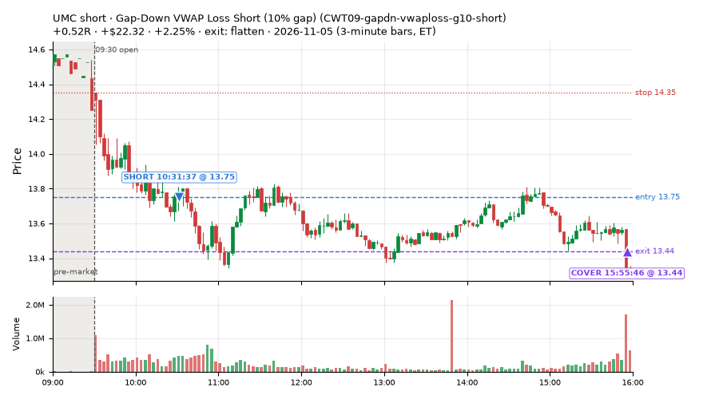
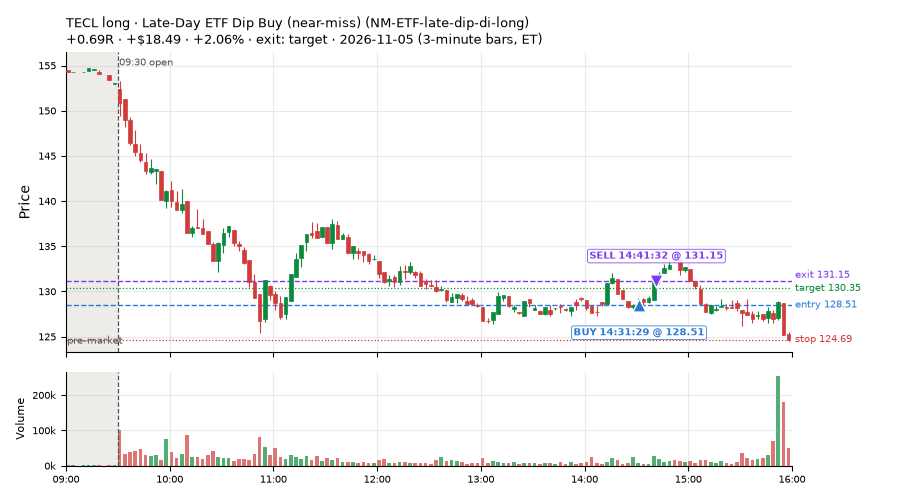
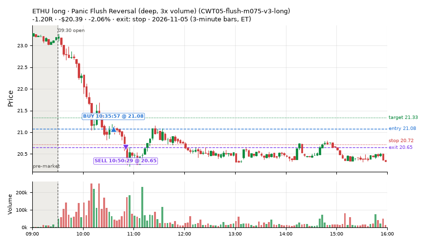
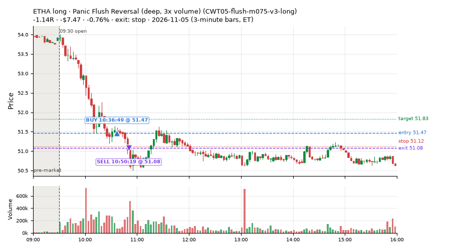
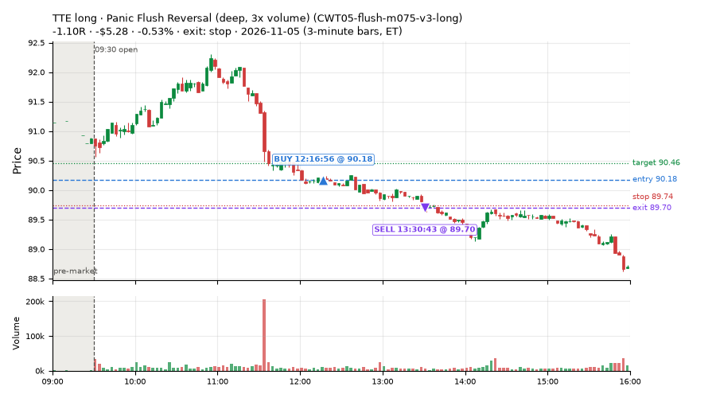
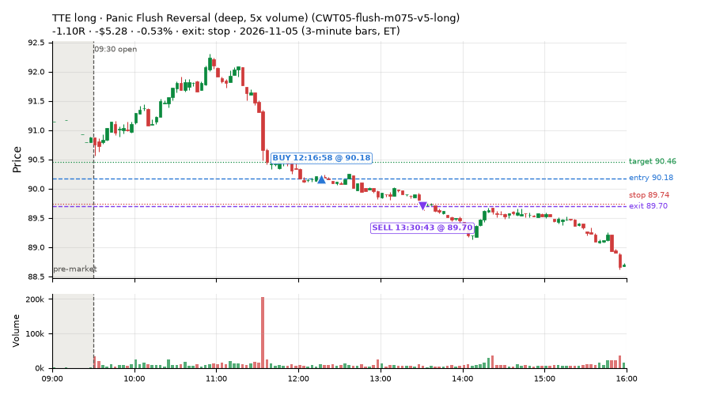
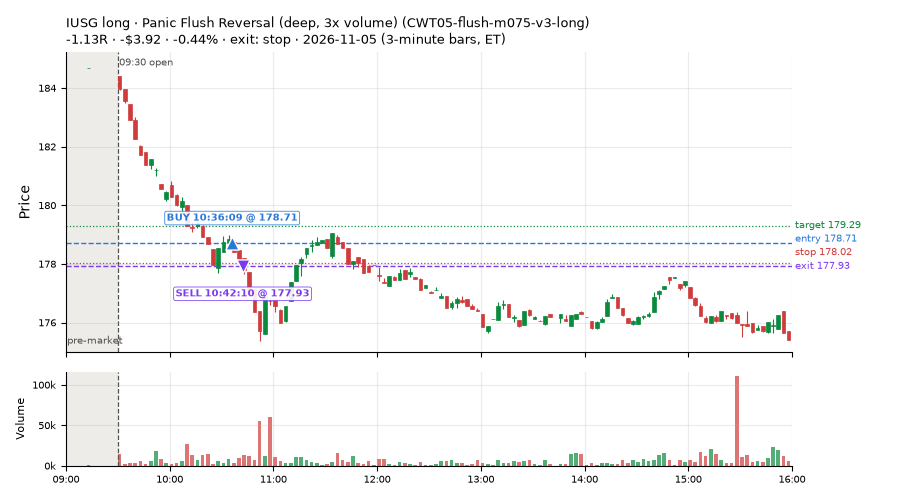

19 trades · win rate 58% · P/L $154.24
PROBATION: no live setup has passed both locked test periods. 10 owner-directed setups added 2026-10-08 (MarcoFlow top 5 + 5 new), untested live. RW6G1 (RW6 + VWAP band guard) added 2026-10-09, probation.

| Symbol | Setup | Side | In | Out | Entry | Exit | Exit reason | % gained | P/L |
|---|---|---|---|---|---|---|---|---|---|
| SOXL | Gap-Down VWAP Loss Short (10% gap) (CWT09-gapdn-vwaploss-g10-short) | short | 10:32 | 15:55 | 48.81 | 42.59 | flatten | +12.74% | $124.32 |
| UMC | Gap-Down VWAP Loss Short (10% gap) (CWT09-gapdn-vwaploss-g10-short) | short | 10:31 | 15:55 | 13.75 | 13.44 | flatten | +2.25% | $22.32 |
| TECL | Late-Day ETF Dip Buy (near-miss) (NM-ETF-late-dip-di-long) | long | 14:31 | 14:41 | 128.51 | 131.15 | target | +2.06% | $18.49 |
| Symbol | Setup | Side | In | Out | Entry | Exit | Exit reason | % lost | P/L |
|---|---|---|---|---|---|---|---|---|---|
| ETHU | CWT05-flush-m075-v3-long | long | 10:35 | 10:50 | 21.08 | 20.65 | stop | -2.06% | $-20.39 |
| ETHA | CWT05-flush-m075-v3-long | long | 10:36 | 10:50 | 51.47 | 51.08 | stop | -0.76% | $-7.47 |
| TTE | CWT05-flush-m075-v3-long | long | 12:16 | 13:30 | 90.18 | 89.70 | stop | -0.53% | $-5.28 |
| TTE | CWT05-flush-m075-v5-long | long | 12:16 | 13:30 | 90.18 | 89.70 | stop | -0.53% | $-5.28 |
| IUSG | CWT05-flush-m075-v3-long | long | 10:36 | 10:42 | 178.71 | 177.93 | stop | -0.44% | $-3.92 |








Signal to fill: median 3s, 90th percentile 6s (19 trades). Bars close each minute; the order follows the bar close.
Best excursion (MFE): median 0.47R; worst (MAE) median 0.15R. 37% of trades never got +0.25R in our favour; 0 reached +1R and still closed at or below 0.
| Symbol | Setup | Best R | Worst R | Closed R |
|---|---|---|---|---|
| ETHA | CWT05-flush-m075-v3-long | +0.39 | -1.56 | -1.14 |
| ETHU | CWT05-flush-m075-v3-long | +0.16 | -1.42 | -1.20 |
| TTE | CWT05-flush-m075-v5-long | +0.17 | -1.05 | -1.10 |
| TTE | CWT05-flush-m075-v3-long | +0.17 | -1.05 | -1.10 |
| IUSG | CWT05-flush-m075-v3-long | +0.07 | -1.32 | -1.13 |
| Entry time | Trades | Win | Avg R | P/L |
|---|---|---|---|---|
| 09:50-10:30 | 1 | 100% | +0.39 | $4.16 |
| 10:30-11:30 | 7 | 57% | -0.19 | $121.54 |
| 11:30-13:00 | 3 | 33% | -0.42 | $-3.83 |
| 13:00-14:00 | 2 | 50% | -0.14 | $0.20 |
| 14:00-16:00 | 6 | 67% | +0.22 | $32.17 |
| Setup | Trades | Win | Avg R | Adj R (net of SPY) | Avg R ex-market (all sessions) | P/L |
|---|---|---|---|---|---|---|
| Panic Flush Reversal (deep, 3x volume) (CWT05-flush-m075-v3-long) | 6.0 | 33% | -0.61 | -0.15 | -0.10 (beta +1.43, n 6) | $-30.38 |
| Panic Flush Reversal (deep, 5x volume) (CWT05-flush-m075-v5-long) | 1.0 | 0% | -1.10 | +0.11 | – | $-5.28 |
| Gap-Down VWAP Loss Short (10% gap) (CWT09-gapdn-vwaploss-g10-short) | 2.0 | 100% | +0.60 | +0.34 | – | $146.64 |
| Spike-Pullback Flag Breakout (CWT12-flag-s1-long) | 1.0 | 100% | +0.14 | +0.15 | – | $3.05 |
| Prior-Day Low Sweep Reversal to VWAP (LIQ-pdl-sweep-open15-vwap-long) | 2.0 | 0% | -0.61 | -0.10 | – | $-6.60 |
| Late-Day ETF Dip Buy (near-miss) (NM-ETF-late-dip-di-long) | 3.0 | 100% | +0.49 | +0.36 | – | $30.67 |
| ST3-rsi5up-short-pm-t1s1-FD | 1.0 | 100% | +0.92 | +0.52 | – | $6.73 |
| ST5-pdbrkup-short-mid-t05s1-FD | 2.0 | 50% | +0.14 | -0.40 | – | $3.46 |
| ST6-volspikeup-short-mid-t1s1-FD | 1.0 | 100% | +0.74 | +0.08 | – | $5.95 |
Market direction (SPY, beta 1) accounted for $23.64 of today's $154.24; the rest ($130.60) came from the setups themselves. Avg R net of SPY: +0.04 (incl. a hedge leg's cost; report only).
21 setups live today. Today: 79 signals, 19 taken, 1 lost because another setup held the symbol (1%). Since 2026-11-05 (1 sessions): 79 signals, 19 taken, 1 lost to other setups (1%). Peak open positions today 6 of 200 slots. Earnings blackout removed 1502 symbols before scanning.
Simulated playing time (not live): 59 what-if trades of signals not taken, avg -0.08R, 56% winners; of them 1 lost to another setup (avg +0.50R).
| Prio | Setup | Today sig / taken | Sessions | Signals / taken / trades | Taken/day | Expected/day | Lost to other setups | Lost to (setup n) | Top skip reasons | SIMULATED: not-taken n / avg R / win | Verdict |
|---|---|---|---|---|---|---|---|---|---|---|---|
| 1 | Index Dip Bounce 1 TQQQ IDX1-qqq100-0955-TQQQ-trail | 0 / 0 | 1 | 0 / 0 / 0 | 0.00 | – | 0 | – | – | 0 / – | quiet - wait no signals in 1 session(s); too early to tell |
| 2 | Index Dip Bounce 3 3x S&P IDX3-spy075-0955-3x-trail | 0 / 0 | 1 | 0 / 0 / 0 | 0.00 | – | 0 | – | – | 0 / – | quiet - wait no signals in 1 session(s); too early to tell |
| 3 | * Oversold Slope Turn with Breadth Turning Up (near-miss) LD5-st2-breadthup-t05s1-long | 0 / 0 | 1 | 0 / 0 / 0 | 0.00 | – | 0 | – | – | 0 / – | quiet - wait no signals in 1 session(s); too early to tell |
| 4 | * SPY Dip of 0.2 ATR, Breadth Turn (SPXL, trailing) (near-miss) LD6-spy-dip020atr-breadthturn-spxl-holdtr-long | 0 / 0 | 1 | 0 / 0 / 0 | 0.00 | – | 0 | – | – | 0 / – | quiet - wait no signals in 1 session(s); too early to tell |
| 5 | Backside Lower-High Short (big runner) CWT04-backside-lh-a25-short | 1 / 0 | 1 | 1 / 0 / 0 | 0.00 | – | 0 | – | not shortable / shorts off 1 | 1 / -1.10R / 0% | slow no entries yet |
| 6 | * Shallow Nasdaq Dip, Breadth Turn (TQQQ) (near-miss) LD2-qqq-dip015-breadthturn-tqqq-t05s1-long | 0 / 0 | 1 | 0 / 0 / 0 | 0.00 | – | 0 | – | – | 0 / – | quiet - wait no signals in 1 session(s); too early to tell |
| 7 | Prior-Day Low Sweep Reversal to VWAP LIQ-pdl-sweep-open15-vwap-long | 2 / 2 | 1 | 2 / 2 / 2 | 2.00 | – | 0 | – | – | 0 / – | slow 10.0 entries/week; ~6 weeks to 60 trades |
| 8 | * Oversold Pop after an SPY Dip-Turn (trailing) (near-miss) LD7-ns1-idxturn-holdtr-long | 0 / 0 | 1 | 0 / 0 / 0 | 0.00 | – | 0 | – | – | 0 / – | quiet - wait no signals in 1 session(s); too early to tell |
| 9 | ST5-pdbrkup-short-mid-t05s1-FD ST5-pdbrkup-short-mid-t05s1-FD | 6 / 2 | 1 | 6 / 2 / 2 | 2.00 | 0.78 | 0 | – | not shortable / shorts off 4 | 4 / -0.04R / 75% | slow 10.0 entries/week; ~6 weeks to 60 trades |
| 10 | Early NS3 Short While QQQ Up (near-miss) NM-RWR3-ns3-qqqup-early-short | 0 / 0 | 1 | 0 / 0 / 0 | 0.00 | – | 0 | – | – | 0 / – | quiet - wait no signals in 1 session(s); too early to tell |
| 11 | Gap-Down Reclaim Fade, Afternoon (near-miss) NM-PM-gapdn-above-pdh-rvol-short | 0 / 0 | 1 | 0 / 0 / 0 | 0.00 | – | 0 | – | – | 0 / – | quiet - wait no signals in 1 session(s); too early to tell |
| 12 | Late-Day ETF Dip Buy (near-miss) NM-ETF-late-dip-di-long | 4 / 3 | 1 | 4 / 3 / 3 | 3.00 | – | 1 | CWT09-gapdn-vwaploss-g10-short 1 | symbol held by another setup 1 | 1 / +0.50R / 100% | ok 15.0 entries/week |
| 13 | ST6-volspikeup-short-mid-t1s1-FD ST6-volspikeup-short-mid-t1s1-FD | 2 / 1 | 1 | 2 / 1 / 1 | 1.00 | 1.24 | 0 | – | spread / quote / size 1 | 1 / -1.02R / 0% | slow 5.0 entries/week; ~12 weeks to 60 trades |
| 14 | Gap-Down VWAP Loss Short (10% gap) CWT09-gapdn-vwaploss-g10-short | 39 / 2 | 1 | 39 / 2 / 2 | 2.00 | – | 0 | – | not shortable / shorts off 35, spread / quote / size 2 | 37 / -0.04R / 57% | slow 10.0 entries/week; ~6 weeks to 60 trades |
| 15 | ST3-rsi5up-short-pm-t1s1-FD ST3-rsi5up-short-pm-t1s1-FD | 2 / 1 | 1 | 2 / 1 / 1 | 1.00 | 1.35 | 0 | – | not shortable / shorts off 1 | 1 / -1.04R / 0% | slow 5.0 entries/week; ~12 weeks to 60 trades |
| 16 | Afternoon Exhaustion Short, Gap-Down, SPY Up (near-miss) NM-RWR1-exh150-gapdn-spyup-pm-short | 0 / 0 | 1 | 0 / 0 / 0 | 0.00 | – | 0 | – | – | 0 / – | quiet - wait no signals in 1 session(s); too early to tell |
| 17 | Panic Flush Reversal (deep, 5x volume) CWT05-flush-m075-v5-long | 2 / 1 | 1 | 2 / 1 / 1 | 1.00 | – | 0 | – | spread / quote / size 1 | 1 / +0.92R / 100% | slow 5.0 entries/week; ~12 weeks to 60 trades |
| 18 | NS2 Short, SPY Up 0.5%, Not Friday (near-miss) NM-RWN4-ns2-spyup05-notfri-short | 0 / 0 | 1 | 0 / 0 / 0 | 0.00 | – | 0 | – | – | 0 / – | quiet - wait no signals in 1 session(s); too early to tell |
| 19 | Panic Flush Reversal (deep, 3x volume) CWT05-flush-m075-v3-long | 13 / 6 | 1 | 13 / 6 / 6 | 6.00 | – | 0 | – | other 6, spread / quote / size 1 | 6 / -0.09R / 67% | ok 30.0 entries/week |
| 20 | Spike-Pullback Flag Breakout CWT12-flag-s1-long | 4 / 1 | 1 | 4 / 1 / 1 | 1.00 | – | 0 | – | other 2, broker rejected 1 | 3 / +0.10R / 67% | slow 5.0 entries/week; ~12 weeks to 60 trades |
| 21 | Backside VWAP-Test Short CWT04-backside-vwaptest-a15-short | 4 / 0 | 1 | 4 / 0 / 0 | 0.00 | – | 0 | – | not shortable / shorts off 4 | 4 / -0.30R / 25% | slow no entries yet |
Every trade is attached as a CSV you can open and edit in Excel or Google Sheets. Live page: https://misiti15.github.io/MCF/live/